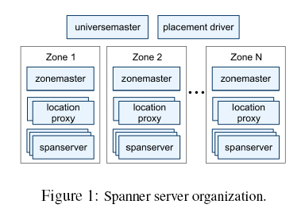
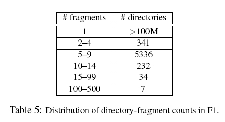
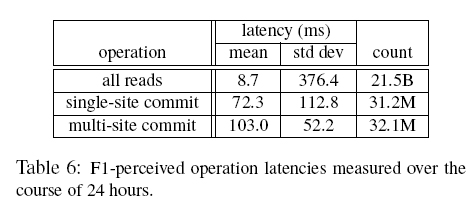

[OSDI'12] Spanner: Google's Globally-Distributed Database 论文阅读
#0. 摘要
Spanner 是 Google 公司研发的、可扩展的、多版本、全球分布式、同步复制数据库。它是第一个把数据分布在全球范围内的系统，并且支持外部一致性的分布式事务。本文描述了 Spanner 的架构、特性、不同设计决策的背后机理和一个新的时间 API，这个 API 可以暴露时钟的不确定性。这个 API 及其实现，对于支持外部一致性和许多强大特性而言，是非常重要的，这些强大特性包括：非阻塞的读、不采用锁机制的只读事务、原子模式变更。
#1. 引言
Spanner 是一个可扩展的、全球分布式的数据库，是在谷歌公司设计、开发和部署的。在最高抽象层面，Spanner 就是一个数据库，把数据分片存储在许多 Paxos 状态机上，这些机器位于遍布全球的数据中心内。复制技术可以用来服务于全球可用性和地理局部性。客户端会自动在副本之间进行失败恢复。随着数据的变化和服务器的变化，Spanner 会自动把数据进行重新分片，从而有效应对负载变化和处理失败。Spanner 被设计成可以扩展到几百万个机器节点，跨越成百上千个数据中心，具备几万亿数据库行的规模。
Spanner 的主要目标是管理跨数中心的副本数据，但是我们还花了很多时间设计并实现了在我们的分布式系统基础架构之上的重要的数据库特性。因为 Bigtable 对一些类型的应用程序来说难以使用：如那些有复杂、不断演进的模型的程序或那些想要在广域副本中维护强一致性的程序。 Google 的许多应用程序选择使用 Megastore，因为它支持半结构化数据模型和副本同步，尽管它的写入吞吐量相对较弱。为此，Spanner 从一个类似 Bigtable 的版本化键值存储（versioned key-value store）演进成了一个多版本时态数据库（temporal multi-version database）。
作为一个全球分布式数据库，Spanner 提供了几个有趣的特性：
- 第一，在数据的副本配置方面，应用可以在一个很细的粒度上进行动态控制。应用可以详细规定，哪些数据中心包含哪些数据，数据距离用户有多远（控制用户读取数据的延迟），不同数据副本之间距离有多远（控制写操作的延迟），以及需要维护多少个副本（控制可用性和读操作性能）。数据也可以被动态和透明地在数据中心之间进行移动，从而平衡不同数据中心内资源的使用。
- 第二，Spanner 有两个重要的特性，很难在一个分布式数据库上实现，即 Spanner 提供了读和写操作的外部一致性，以及在一个时间戳下面的跨越数据库的全球一致性的读操作。
这些特性有效的原因在于，Spanner 会为事务分配在全局有效的提交时间戳，尽管事务可能是分布式的。该时间戳反映了串行顺序。另外，串行顺序满足外部一致性（或等价的线性一致性）：如果事务 在另一个事务 开始前提交，那么 的时间戳比 的小。 Spanner 是首个能在全球范围提供这些保证的系统。
实现这种特性的关键技术就是一个新的 TrueTime API 及其实现。该 API 直接暴露了时钟不确定度，且对 Spanner 的时间戳的保证基于该 API 的实现提供的界限内。如果不确定度较大，Spanner 会减速以等待该不确定度。 Google 的集群管理软件提供了 TureTime API 的一种实现。该实现通过使用多种现代参考时钟（GPS 和原子时钟）来让不确定度保持较小（通常小于 10ms）。
#2. 实现
一个 Spanner 部署称为一个 universe。假设 Spanner 在全球范围内管理数据，那么，将会只有可数的、运行中的 universe。我们当前正在运行一个测试用的 universe，一个部署/线上用的 universe 和一个只用于线上应用的 universe。
Spanner 被组织成许多个 zone 的集合，每个 zone 都大概像一个 BigTable 服务器的部署。 zone 是管理部署的基本单元。zone 的集合也是数据可以被复制到的位置的集合。当新的数据中心加入服务，或者老的数据中心被关闭时，zone 可以被加入到一个运行的系统中，或者从中移除。 zone 也是物理隔离的单元，在一个数据中心中，可能有一个或者多个 zone，例如，属于不同应用的数据可能必须被分区存储到同一个数据中心的不同服务器集合中。

一个 zone 包括一个 zonemaster，和一百至几千个 spanserver。 Zonemaster 把数据分配给 spanserver，spanserver 把数据提供给客户端。客户端使用每个 zone 上面的 location proxy 来定位可以为自己提供数据的 spanserver。 Universe master 和 placement driver，当前都只有一个。 Universe master 主要是一个控制台，它显示了关于 zone 的各种状态信息，可以用于相互之间的调试。 Placement driver 会周期性地与 spanserver 进行交互，来发现那些需要被转移的数据，或者是为了满足新的副本约束条件，或者是为了进行负载均衡。
#2.1 Spanserver 软件栈
在底部，每个 spanserver 负载管理 100-1000 个称为 Tablet 的数据结构实例。 Tablet 类似于 BigTable 中的 Tablet，也实现了下面的映射：
(key:string, timestamp:int64) -> string

与 BigTable 不同的是，Spanner 会把时间戳分配给数据，这种非常重要的方式，使得 Spanner 更像一个多版本数据库，而不是一个键值存储。一个 Tablet 的状态是存储在 类似于 B 树的文件集合 和 WAL 中，所有这些都会被保存到 Colossus，它继承自 Google File System。
为了支持复制，每个 spanserver 会在每个 Tablet 上面实现一个 Paxos 状态机。一个之前实现的 Spanner 可以支持在每个 Tablet 上面实现多个 Paxos 状态机（博主注：类似现在流行的 Multi-Raft），它可以允许更加灵活的复制配置，但是，这种设计过于复杂，被我们舍弃了。每个状态机都会在相应的 Tablet 中保存自己的元数据和日志。我们的 Paxos 实现支持采用基于时间的领导者租约的长寿命的领导者，时间通常在 0 到 10 秒之间。当前的 Spanner 实现中，会对每个 Paxos 写操作进行两次记录：一次是写入到 tablet 日志中，一次是写入到 Paxos 日志中。这种做法只是权宜之计，我们以后会进行完善。
#2.2 目录和放置
目录是包含公共前缀的连续键的集合。（选择目录作为名称，主要是由于历史沿袭的考虑，实际上更好的名称应该是桶）。对目录的支持，可以让应用通过选择合适的键来控制数据的局部性。
一个目录是数据放置的基本单元。属于一个目录的所有数据，都具有相同的副本配置。当数据在不同的 Paxos 组之间进行移动时，会一个目录一个目录地转移。 Spanner 可能会移动一个目录从而减轻一个 Paxos 组的负担，也可能会把那些被频繁地一起访问的目录都放置到同一个组中，或者会把一个目录转移到距离访问者更近的地方。当客户端操作正在进行时，也可以进行目录的转移。我们可以预期在几秒内转移 50MB 的目录。

一个 Paxos 组可以包含多个目录，这意味着一个 Spanner Tablet 是不同于一个 BigTable Tablet 的。一个 Spanner Tablet 没有必要是一个行空间内按照词典顺序连续的分区，相反，它可以是行空间内的多个分区。我们做出这个决定，是因为这样做可以让多个被频繁一起访问的目录被整合到一起。
Movedir 是一个后台任务，用来在不同的 Paxos 组之间转移目录。Movedir 也用来为 Paxos 组增加和删除副本，因为 Spanner 目前还不支持在一个 Paxos 内部进行配置的变更。 Movedir 并不是作为一个事务来实现，这样可以避免在一个块数据转移过程中阻塞正在进行的读操作和写操作。相反，Movedir 会注册一个事实(fact)，表明它要转移数据，然后在后台运行转移数据。当它几乎快要转移完指定数量的数据时，就会启动一个事务来自动转移那部分数据，并且为两个 Paxos 组更新元数据。
一个目录也是一个应用可以指定的地理复制属性（即放置策略）的最小单元。我们的放置规范语言的设计，把管理复制的配置这个任务单独分离出来。管理员需要控制两个维度：副本的数量和类型，以及这些副本的地理放置属性。他们在这两个维度里面创建了一个命名选项的菜单。通过为每个数据库或单独的目录增加这些命名选项的组合，一个应用就可以控制数据的复制。例如，一个应用可能会在自己的目录里存储每个终端用户的数据，这就有可能使得用户 A 的数据在欧洲有三个副本，用户 B 的数据在北美有 5 个副本。
为了表达的清晰性，我们已经做了尽量简化。事实上，当一个目录变得太大时，Spanner 会把它分片存储。每个分片可能会被保存到不同的 Paxos 组上（因此就意味着来自不同的服务器）。 Movedir 在不同组之间转移的是分片，而不是转移整个目录。
#2.3 数据模型
Spanner 会把下面的数据特性集合暴露给应用：
- 基于 Schema 的半关系表的数据模型
- 查询语言
- 通用事务
支持这些特性的动机，是受到许多因素驱动的。
- 需要 Schema 的半关系表: 是由 Megastore 的普及来支持的。在谷歌内部至少有 300 个应用使用 Megastore（尽管它具有相对低的性能），因为它的数据模型要比 BigTable 简单，更易于管理，并且支持在跨数据中心层面进行同步复制。而 BigTable 只可以支持跨数据中心的最终事务一致性。使用 Megastore 的著名的谷歌应用是 Gmail,Picasa,Calendar,Android Market, AppEngine。
- 在 Spanner 中需要支持 SQL 类型的查询语言，也很显然是非常必要的，因为 Dremel 作为交互式分析工具已经非常普及。
- 事务：在 BigTable 中跨行事务的缺乏来导致了用户频繁的抱怨；开发 Percolator 就是用来部分解决这个问题的。一些作者都在抱怨，通用的两阶段提交的代价过于昂贵，因为它会带来可用性问题和性能问题。我们认为，最好让应用程序开发人员来处理由于过度使用事务引起的性能问题，而不是总是围绕着“缺少事务”进行编程。在 Paxos 上运行两阶段提交弱化了可用性问题。
应用的数据模型是架构在被目录桶装的键值映射层之上。一个应用会在一个 universe 中创建一个或者多个数据库。每个数据库可以包含无限数量的模式化的表。每个表都和关系数据库表类似，具备行、列和版本值。我们不会详细介绍 Spanner 的查询语言，它看起来很像 SQL，只是做了一些扩展。
Spanner 的数据模型不是纯粹关系型的，它的行必须有名称。更准确地说，每个表都需要有包含一个或多个主键列的排序集合。这种需求，让 Spanner 看起来仍然有点像键值存储：主键形成了一个行的名称，每个表都定义了从主键列到非主键列的映射。当一个行存在时，必须要求已经给行的一些键定义了一些值（即使是 NULL）。采用这种结构是很有用的，因为这可以让应用通过选择键来控制数据的局部性。

图 4 包含了一个 Spanner 模式的实例，它是以每个用户和每个相册为基础存储图片元数据。这个模式语言和 Megastore 的类似，同时增加了额外的要求，即每个 Spanner 数据库必须被客户端分割成一个或多个表的层次结构（hierarchy）。客户端应用会使用 INTERLEAVE IN 语句在数据库模式中声明这个层次结构。这个层次结构上面的表，是一个目录表。目录表中的每行都具有键 K，和子孙表中的所有以 K 开始（以字典顺序排序）的行一起，构成了一个目录。ON DELETE CASCADE 意味着，如果删除目录中的一个行，也会级联删除所有相关的子孙行。这个图也解释了这个实例数据库的交织层次（interleaved layout），例如 Albums(2,1)代表了来自 Albums 表的、对应于 user_id=2 和 album_id=1 的行。这种表的交织层次形成目录，是非常重要的，因为它允许客户端来描述存在于多个表之间的位置关系，这对于一个分片的分布式数据库的性能而言是很重要的。没有它的话，Spanner 就无法知道最重要的位置关系。
#3 TrueTime

本部分内容描述 TrueTime API，并大概给出它的实现方法。细节内容将放在另一篇论文中，我们的目标是展示这种 API 的力量。
在底层，TrueTime 使用的时间是 GPS 和原子钟。TrueTime 使用两种类型的时间，是因为它们有不同的失败模式。GPS 参考时间的弱点是天线和接收器失效、局部电磁干扰和相关失败（比如设计上的缺陷导致无法正确处理闰秒和电子欺骗），以及 GPS 系统运行中断。原子钟也会失效，不过失效的方式和 GPS 无关，不同原子钟之间的失效也没有彼此关联。由于存在频率误差，在经过很长的时间以后，原子钟都会产生明显误差。
TrueTime 是由每个数据中心上面的许多 time master 机器和每台机器上的一个 timeslave daemon 来共同实现的。大多数 master 都有具备专用天线的 GPS 接收器，这些 master 在物理上是相互隔离的，这样可以减少天线失效、电磁干扰和电子欺骗的影响。剩余的 master（我们称为 Armageddon master）则配备了原子钟。一个原子钟并不是很昂贵：一个 Armageddon master 的花费和一个 GPS master 的花费是同一个数量级的。所有 master 的时间参考值都会进行彼此校对。每个 master 也会交叉检查时间参考值和本地时间的比值，如果二者差别太大，就会把自己驱逐出去。在同步期间，Armageddon master 会表现出一个逐渐增加的时间不确定性，这是由保守应用的最差时钟漂移引起的。GPS master 表现出的时间不确定性几乎接近于 0。
每个 daemon 会从许多 master 中收集投票，获得时间参考值，从而减少误差。被选中的 master 中，有些 master 是 GPS master，是从附近的数据中心获得的，剩余的 GPS master 是从远处的数据中心获得的；还有一些是 Armageddon master。Daemon 会使用一个 Marzullo 算法的变种，来探测和拒绝欺骗，并且把本地时钟同步到非撒谎 master 的时间参考值。为了免受较差的本地时钟的影响，我们会根据组件规范和运行环境确定一个界限，如果机器的本地时钟误差频繁超出这个界限，这个机器就会被驱逐出去。
在同步期间，一个 daemon 会表现出逐渐增加的时间不确定性。ε 是从保守应用的最差时钟漂移中得到的。ε 也取决于 time master 的不确定性，以及与 time master 之间的通讯延迟。在我们的线上应用环境中，ε 通常是一个关于时间的锯齿形函数。在每个投票间隔中，ε 会在 1 到 7ms 之间变化。因此，在大多数情况下，ε 的平均值是 4ms。Daemon 的投票间隔，在当前是 30 秒，当前使用的时钟漂移比率是 200 微秒/秒，二者一起意味着 0 到 6ms 的锯齿形边界。剩余的 1ms 主要来自到 time master 的通讯延迟。在失败的时候，超过这个锯齿形边界也是有可能的。例如，偶尔的 time master 不确定性，可能会引起整个数据中心范围内的 ε 值的增加。类似的，过载的机器或者网络连接，都会导致 ε 值偶尔地局部增大。
#4. 并发控制
本部分内容描述 TrueTime 如何可以用来保证并发控制的正确性，以及这些属性如何用来实现一些关键特性，比如外部一致性的事务、无锁机制的只读事务、针对历史数据的非阻塞读。这些特性可以保证，在时间戳为 t 的时刻的数据库读操作，一定只能看到在 t 时刻之前已经提交的事务。
进一步说，把 Spanner 客户端的写操作和 Paxos 看到的写操作这二者进行区分，是非常重要的，我们把 Paxos 看到的写操作称为 Paxos 写操作。例如，两阶段提交会为准备提交阶段生成一个 Paxos 写操作，这时不会有相应的客户端写操作。
#4.1 时间戳管理
表 2 列出了 Spanner 支持的操作的类型。Spanner 可以支持读写事务、只读事务（预先声明的快照隔离事务）和快照读。独立写操作，会被当成读写事务来执行。非快照独立读操作，会被当成只读事务来执行。二者都是在内部进行 retry，客户端不用进行这种 retry loop。

一个只读事务具备快照隔离的性能优势。一个只读事务必须事先被声明不会包含任何写操作，它并不是一个简单的不包含写操作的读写事务。在一个只读事务中的读操作，在执行时会采用一个系统选择的时间戳，不包含锁机制，因此，后面到达的写操作不会被阻塞。在一个只读事务中的读操作，可以到任何足够新的副本上去执行（见第 4.1.3 节）。
一个快照读操作，是针对历史数据的读取，执行过程中，不需要锁机制。一个客户端可以为快照读确定一个时间戳，或者提供一个时间范围让 Spanner 来自动选择时间戳。不管是哪种情况，快照读操作都可以在任何具有足够新的副本上执行。
对于只读事务和快照读而言，一旦已经选定一个时间戳，那么，提交就是不可避免的，除非在那个时间点的数据已经被垃圾回收了。因此，客户端不必在 retry loop 中缓存结果。当一个服务器失效的时候，客户端就可以使用同样的时间戳和当前的读位置，在另外一个服务器上继续执行读操作。
#4.2 细节
（略）
#5. 实验分析
#5.4 F1
Spanner 在 2011 年早期开始进行在线负载测试，它是作为谷歌广告后台 F1 的重新实现的一部分。这个后台最开始是基于 MySQL 数据库，在许多方面都采用手工数据分区。未经压缩的数据可以达到几十 TB，虽然这对于许多 NoSQL 实例而言数据量是很小的，但是，对于采用数据分区的 MySQL 而言，数据量是非常大的。 MySQL 的数据分片机制，会把每个客户和所有相关的数据分配给一个固定的分区。这种布局方式，可以支持针对单个客户的索引构建和复杂查询处理，但是，需要了解一些商业知识来设计分区。随着客户数量的增长，对数据进行重新分区，代价是很大的。最近一次的重新分区，花费了两年的时间，为了降低风险，在多个团队之间进行了大量的合作和测试。这种操作太复杂了，无法常常执行，由此导致的结果是，团队必须限制 MySQL 数据库的增长，方法是，把一些数据存储在外部的 Bigtable 中，这就会牺牲事务和查询所有数据的能力。
F1 团队选择使用 Spanner 有几个方面的原因。
- Spanner 不需要手工分区。
- Spanner 提供了同步复制和自动失败恢复。在采用 MySQL 的 master-slave 复制方法时，很难进行失败恢复，会有数据丢失和宕机的风险。
- F1 需要强壮的事务语义，这使得使用其他 NoSQL 系统是不实际的。应用语义需要跨越任意数据的事务和一致性读。F1 团队也需要在他们的数据上构建二级索引（因为 Spanner 没有提供对二级索引的自动支持），也有能力使用 Spanner 事务来实现他们自己的一致性全球索引。
所有应用写操作，现在都是默认从 F1 发送到 Spanner。而不是发送到基于 MySQL 的应用栈。F1 在美国的西岸有两个副本，在东岸有三个副本。这种副本位置的选择，是为了避免发生自然灾害时出现服务停止问题，也是出于前端应用的位置的考虑。实际上，Spanner 的失败自动恢复，几乎是不可见的。在过去的几个月中，尽管有不在计划内的机群失效，但是，F1 团队最需要做的工作仍然是更新他们的数据库模式，来告诉 Spanner 在哪里放置 Paxos 领导者，从而使得它们尽量靠近应用前端。
Spanner 时间戳语义，使得它对于 F1 而言，可以高效地维护从数据库状态计算得到的、放在内存中的数据结构。F1 会为所有变更都维护一个逻辑历史日志，它会作为每个事务的一部分写入到 Spanner。F1 会得到某个时间戳下的数据的完整快照，来初始化它的数据结构，然后根据数据的增量变化来更新这个数据结构。

表 5 显示了 F1 中每个目录的分片数量的分布情况。每个目录通常对应于 F1 上的应用栈中的一个用户。绝大多数目录（同时意味着绝大多数用户）都只会包含一个分片，这就意味着，对于这些用户数据的读和写操作只会发生在一个服务器上。多于 100 个分片的目录，是那些包含 F1 二级索引的表：对这些表的多个分片进行写操作，是极其不寻常的。F1 团队也只是在以事务的方式进行未经优化的批量数据加载时，才会碰到这种情形。

表 6 显示了从 F1 服务器来测量的 Spanner 操作的延迟。在东海岸数据中心的副本，在选择 Paxos 领导者方面会获得更高的优先级。表 6 中的数据是从这些数据中心的 F1 服务器上测量得到的。写操作延迟分布上存在较大的标准差，是由于锁冲突引起的肥尾效应（fat tail）。在读操作延迟分布上存在更大的标准差，部分是因为 Paxos 领导者跨越了两个数据中心，只有其中的一个是采用了固态盘的机器。此外，测试内容还包括系统中的每个针对两个数据中心的读操作：字节读操作的平均值和标准差分别是 1.6KB 和 119KB。
#6. 相关工作
Megastore 和 DynamoDB 已经提供了跨越多个数据中心的一致性复制。
- DynamoDB 提供了键值存储接口，只能在一个 region 内部进行复制。Spanner 和 Megastore 一样，都提供了半关系数据模型，甚至采用了类似的模式语言。
- Megastore 无法获得高性能。Megastore 是架构在 Bigtable 之上，这带来了很高的通讯代价。Megastore 也不支持长寿命的领导者，多个副本可能会发起写操作。来自不同副本的写操作，在 Paxos 协议下一定会发生冲突，即使他们不会发生逻辑冲突：会严重影响吞吐量，在一个 Paxos 组内每秒钟只能执行几个写操作。Spanner 提供了更高的性能，通用的事务和外部一致性。
Pavlo 等人对数据库和 MapReduce 的性能进行了比较。他们指出了几个努力的方向，可以在分布式键值存储之上充分利用数据库的功能，二者可以实现充分的融合。我们比较赞同这个结论，并且认为集成多个层是具有优势的：把复制和并发控制集成起来，可以减少 Spanner 中的提交等待代价。
在一个采用了复制的存储上面实现事务，可以至少追述到 Gifford 的论文。
- Scatter 是一个最近的基于 DHT 的键值存储，可以在一致性复制上面实现事务。Spanner 则要比 Scatter 在更高的层次上提供接口。
- Gray 和 Lamport 描述了一个基于 Paxos 的非阻塞的提交协议，他们的协议会比两阶段提交协议带来更多的代价，而两阶段提交协议在大范围分布式的组中的代价会进一步恶化。
- Walter 提供了一个快照隔离的变种，但是无法跨越数据中心。相反，我们的只读事务提供了一个更加自然的语义，因为，我们对于所有的操作都支持外部语义。
最近，在减少或者消除锁开销方面已经有大量的研究工作。
- Calvin 消除了并发控制：它会重新分配时间戳，然后以时间戳的顺序执行事务。
- HStore 和 Granola 都支持自己的事务类型划分方法，有些事务类型可以避免锁机制。
但是，这些系统都无法提供外部一致性。Spanner 通过提供快照隔离，解决了冲突问题。
VoltDB 是一个分片的内存数据库，可以支持在大范围区域内进行主从复制，支持灾难恢复，但是没有提供通用的复制配置方法。它是一个被称为 NewSQL 的实例，这是实现可扩展的 SQL 的强大的市场推动力。许多商业化的数据库都可以支持历史数据读取，比如 Marklogic 和 Oracle’ Total Recall。 Lomet 和 Li 对于这种时间数据库描述了一种实现策略。
Faresite 给出了与一个受信任的时钟参考值相关的、时钟不确定性的边界（要比 TrueTime 更加宽松）：Farsite 中的服务器租约的方式，和 Spanner 中维护 Paxos 租约的方式相同。在之前的工作中 [23]，宽松同步时钟已经被用来进行并发控制。我们已经展示了 TrueTime 可以从 Paxos 状态机集合中推导出全球时间。
#参考资料
- Google Spanner (中文版)